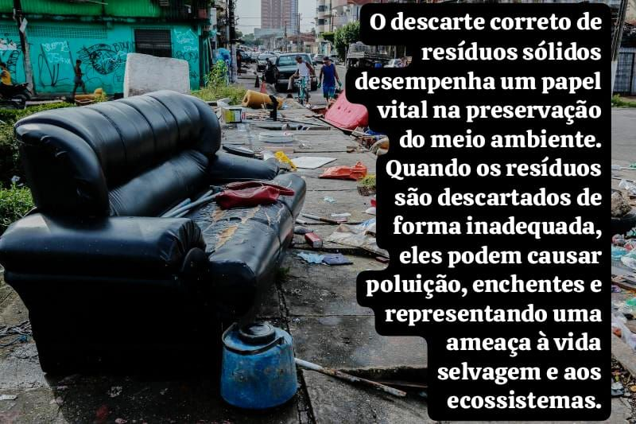

A importância da Coleta Seletiva
Este vídeo traz a explicação sobre a Coleta Seletiva. Confira:
Documentário sobre a Cultura do Desperdício
Abaixo, temos um documentário que vale a pena assistir:
Como fazer o descarte correto dos resíduos?
O primeiro passo é separar corretamente os materiais de descarte. Os Ecopontos recebem pequenos volumes de entulho (até 1 m³), grandes objetos (como móveis e podas de árvores) e resíduos recicláveis. Os materiais podem ser descartados gratuitamente, com caçambas designadas para cada tipo de resíduo.
Depois basta localizar um Ecoponto mais próximo, se certificando do horário de funcionamento, e assim, realizar o descarte da forma correta.
ATENÇÃO: Descarte o Vidro corretamente!
Leve de preferência enxaguado, sem tampa e sem rótulo para o local de descarte (coleta seletiva ou ecopontos).
NÃO encaminhe vidros quebrados para a coleta seletiva.
O que posso descartar nos Ecopontos?
- Resíduos da Construção Civil (cimento, entulho, tijolos, restos de azulejos)
- Madeiras
- Móveis velhos
- Sobras de poda de árvores
- Outros materiais volumosos
- Recicláveis (papel, papelão, plástico, vidro, metal)
O que NÃO posso descartar nos Ecopontos?
- Lixo domiciliar comum
- Lixo eletrônico
- Pilhas e baterias
- Óleo de cozinha
- Material hospitalar
- Resíduos industriais
